press = bkp.press_counter(news_df)
sns.barplot(data = press, x = "기사", y = "언론사")<AxesSubplot: xlabel='기사', ylabel='언론사'>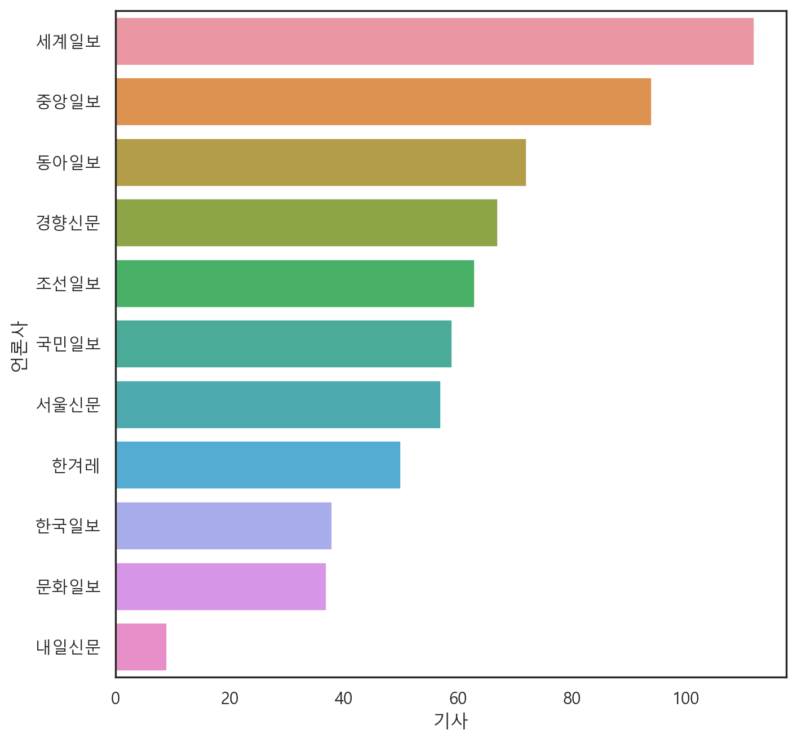
Cluster analysis
지난 2022년 7월 15일, 인하대학교 재학생 강간살인 사건의 언론 재현 수준을 분석한 보고서이다.
먼저 해당 사건 발생일 기준 3개월 간의 뉴스 기사 데이터를 수집하였다.해당 기간 이후의 기사는 대체적으로 본 사건과 관련이 없는 기사가 많았다. 이에, 총 3개월 치의 기사만 수집하였다.
기사는 빅카인즈(BigKinds)를 통해 수집하였다. 포털 사이트의 기사를 크롤링을 하는 방법도 있으나, 포털 뉴스 특성상 기사가 중복된 내용이거나 지나친 편향성을 지닌 기사가 많아, 본 분석에선 빅카인즈에서 데이터를 별도로 수집하는 방식을 선택했다.
또한 언론의 어젠다를 분석하는데 있어 주요 신문사들의 보도를 보는 것이 좋다고 판단하여 총 10개의 언론사(“세계일보”, “문화일보”, “경향신문”, “동아일보”, “한겨레”, “서울신문”,“한국일보”,“중앙일보”, “국민일보”,“조선일보”)의 기사를 선별하여 데이터를 수집했다.
본 내용은 전체 기사 중 주제를 중심으로 군집을 형성하는 과정을 진행한 내용이다. 깊게 존재하는 의미 연결망 분석 및 담론 분석은 이후 보고서에서 작성하기로 한다.
먼저 수집한 기사들의 언론사 구성 빈도는 다음과 같다.
press = bkp.press_counter(news_df)
sns.barplot(data = press, x = "기사", y = "언론사")<AxesSubplot: xlabel='기사', ylabel='언론사'>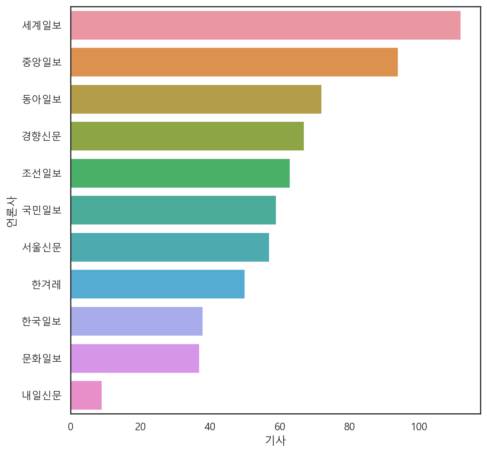
해당 데이터 중 포토 기사는 내용적 측면에서 데이터 분석이 매우 어렵다. 이에 포토 기사는 본 분석에서 제외하기로 결정했다.
filt = news_df[news_df['제목'].str.contains('포토')].index
news_df.drop(filt, inplace=True)
news_df.reset_index(drop = True, inplace = True)키워드 빈도 분석을 진행하였다. 단어 전체의 키워드를 추출한 후, 이를 워드클라우드로 변환하여 분석하였다.
분석 결과는 다음과 같다.
#\ echo = False
lis = bkp.keywords_list(news_df["키워드"])
key = bkp.keyword_parser(lis)
key = bkp.duplication_remover(key)
key_words = bkp.word_counter(key)
key_words = bkp.counter_to_DataFrame(key_words)wc = WordCloud(font_path = './NanumBarunGothic.ttf',
width = 500,
height = 500,
background_color='white').generate_from_frequencies(key_words.set_index('단어').to_dict()["빈도"])
plt.figure(figsize = (8, 8))
plt.imshow(wc)
plt.axis('off')
plt.show()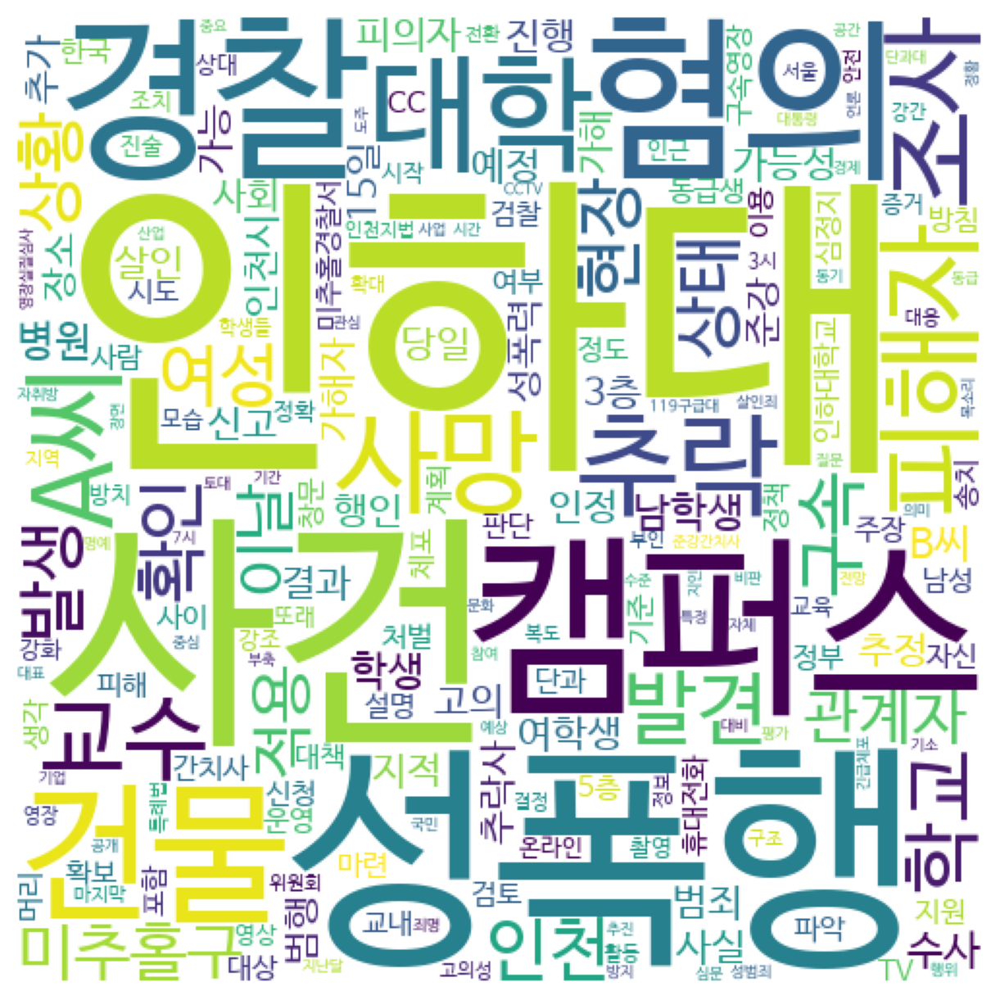
다음은 언론사 별 단어 빈도 분석 결과이다. 본 분석은 보수 언론(조선, 중앙, 동아)와 진보 언론(한겨례, 경향) 간의 차이를 확인하고자 진행하였다.
분석은 위의 절차와 동일한 방법으로 키워드 변환 이후 워드클라우드로 시각화했다.
분석 결과는 다음과 같다.
조선일보
bkp.press_keywords_wordcloud(news_df, '조선일보')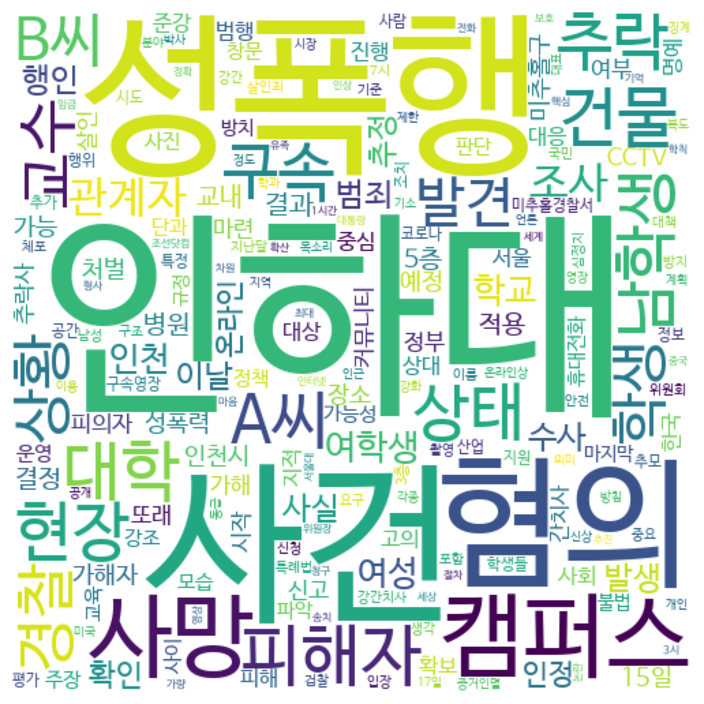
중앙일보
bkp.press_keywords_wordcloud(news_df, '중앙일보')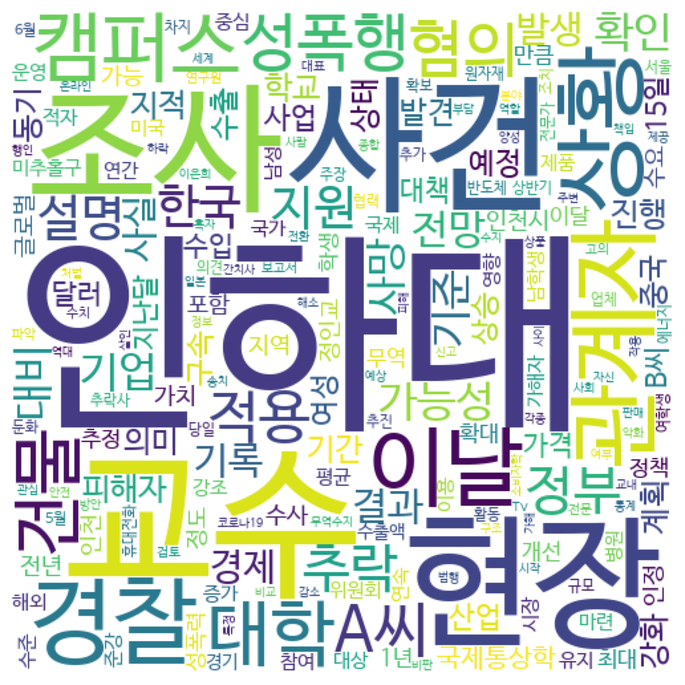
동아일보
bkp.press_keywords_wordcloud(news_df, '동아일보')
한겨례
bkp.press_keywords_wordcloud(news_df, '한겨레')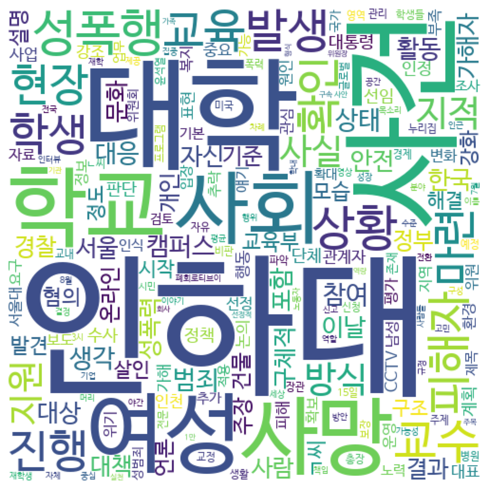
경향신문
bkp.press_keywords_wordcloud(news_df, '경향신문')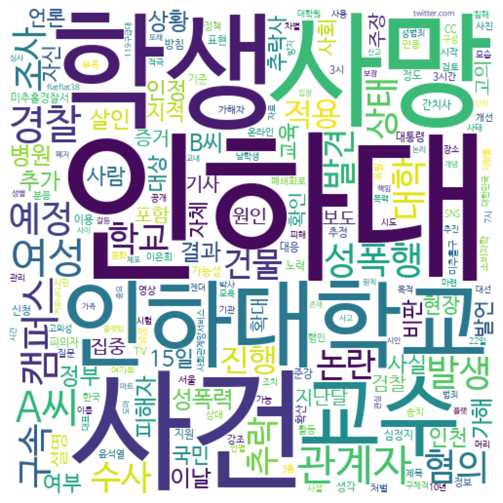
title = bkp.keywords_list(news_df['제목'])words = []
for i in range(len(title)):
word = okt.nouns(title[i])
words.append(word)news_titles = bkp.word_counter(words)
news_titles = bkp.counter_to_DataFrame(news_titles)news_titles= news_titles[news_titles["단어"].str.len() >=2].reset_index(drop = True)news_titles = news_titles.head(20)sns.barplot(data = news_titles, x = '빈도', y = '단어')<AxesSubplot: xlabel='빈도', ylabel='단어'>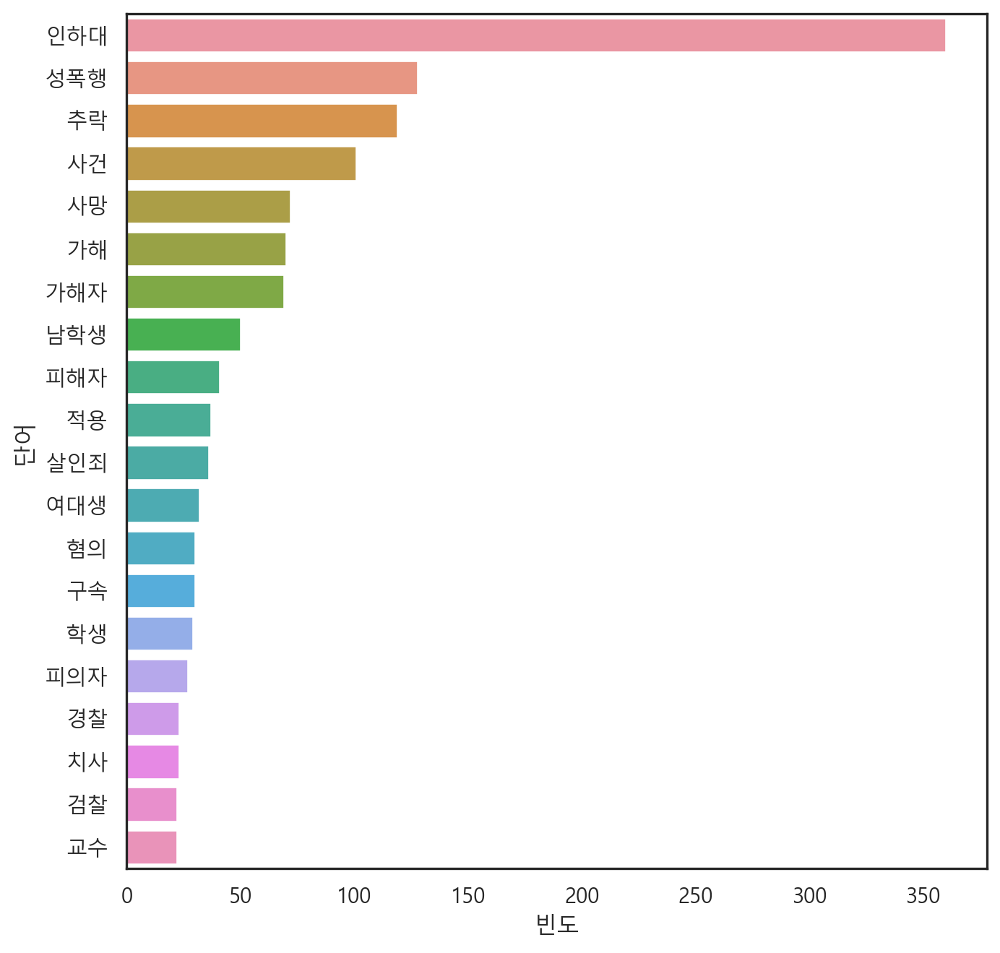
from nltk import bigramswor = []
for sentence in key:
bigram = bigrams(sentence)
for t in bigram:
if t[0]== '성폭행':
wor.append(t[1])
elif t[1] == '성폭행':
wor.append(t[0])counter = {}
for word in wor:
if not word in counter:
counter[word] = 1
elif word in counter:
counter[word] +=1vio_df = bkp.counter_to_DataFrame(counter)
vio_df = vio_df[vio_df['단어'].str.len() >= 2].reset_index(drop = True)sns.barplot(data = vio_df, x = '빈도', y = '단어')<AxesSubplot: xlabel='빈도', ylabel='단어'>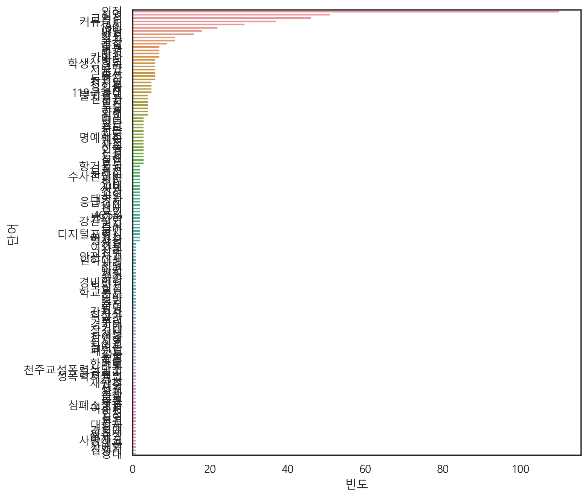
wor = []
for sentence in key:
bigram = bigrams(sentence)
for t in bigram:
if t[0]== '여대생':
wor.append(t[1])
elif t[1] == '여대생':
wor.append(t[0])counter = {}
for word in wor:
if not word in counter:
counter[word] = 1
elif word in counter:
counter[word] +=1vio_df = bkp.counter_to_DataFrame(counter)
vio_df = vio_df[vio_df['단어'].str.len() >= 2].reset_index(drop = True)sns.barplot(data = vio_df, x = '빈도', y = '단어')<AxesSubplot: xlabel='빈도', ylabel='단어'>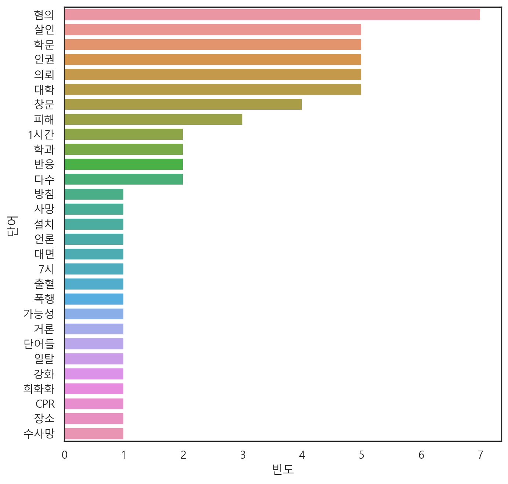
title = bkp.keywords_list(news_df['제목'])bot = []
for i in range(len(title)):
word = okt.nouns(title[i])
bot.append(word)wors = []
for sentence in bot:
bigram = bigrams(sentence)
for t in bigram:
if t[0]== '인하대':
wors.append(t[1])
elif t[1] == '인하대':
wors.append(t[0])counter = {}
for word in wors:
if not word in counter:
counter[word] = 1
if word in counter:
counter[word] +=1
title_df = bkp.counter_to_DataFrame(counter)
title_df = title_df[title_df['단어'].str.len() >= 2].reset_index(drop = True)title_df = title_df.head(30)
sns.barplot(data = title_df, x = '빈도', y = '단어')<AxesSubplot: xlabel='빈도', ylabel='단어'>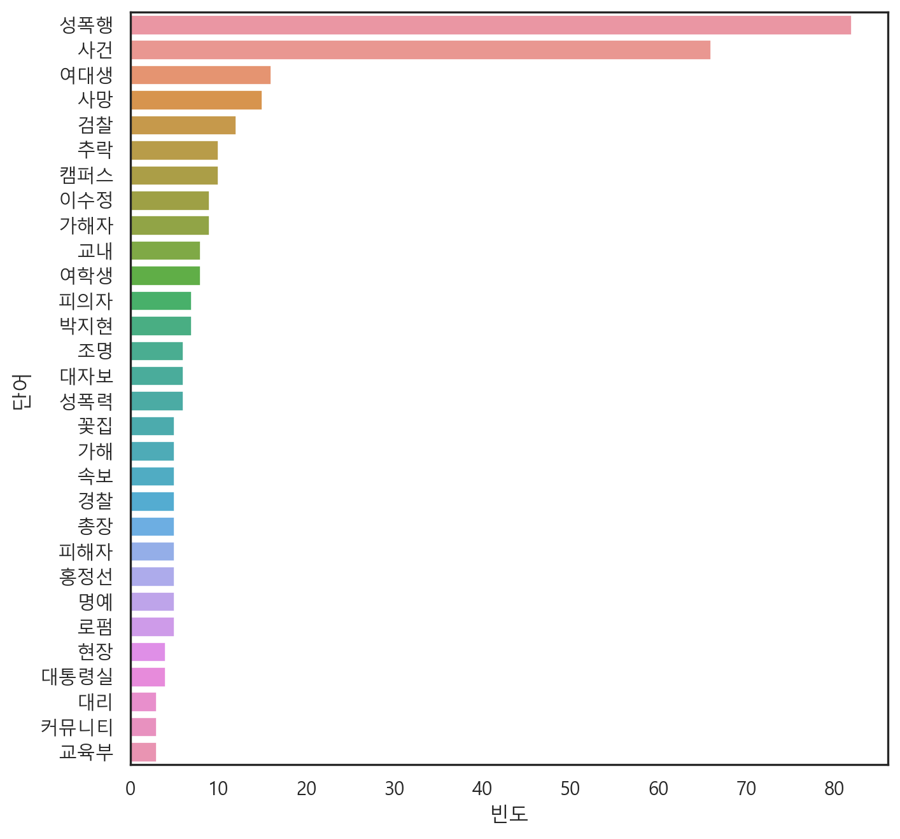
벡터화
from sklearn.feature_extraction.text import CountVectorizer, TfidfTransformer
from sklearn.pipeline import Pipeline
text = news_df['키워드']
pipeline = Pipeline([
('vect', CountVectorizer()),
('tfidf', TfidfTransformer()),
])
vec = pipeline.fit_transform(text).toarray()정규화
from sklearn.preprocessing import Normalizer
nor = Normalizer()
norvec = nor.fit_transform(vec)t-sne 시각화
from sklearn.manifold import TSNE
tsne = TSNE(n_components=2, learning_rate=400).fit_transform(norvec)
tsne_df = pd.DataFrame(tsne, columns = ['component 0', 'component 1'])
plt.scatter(tsne_df['component 0'], tsne_df['component 1'], color = 'orange')
plt.xlabel('component 0')
plt.ylabel('component 1')
plt.legend()
plt.show()No artists with labels found to put in legend. Note that artists whose label start with an underscore are ignored when legend() is called with no argument.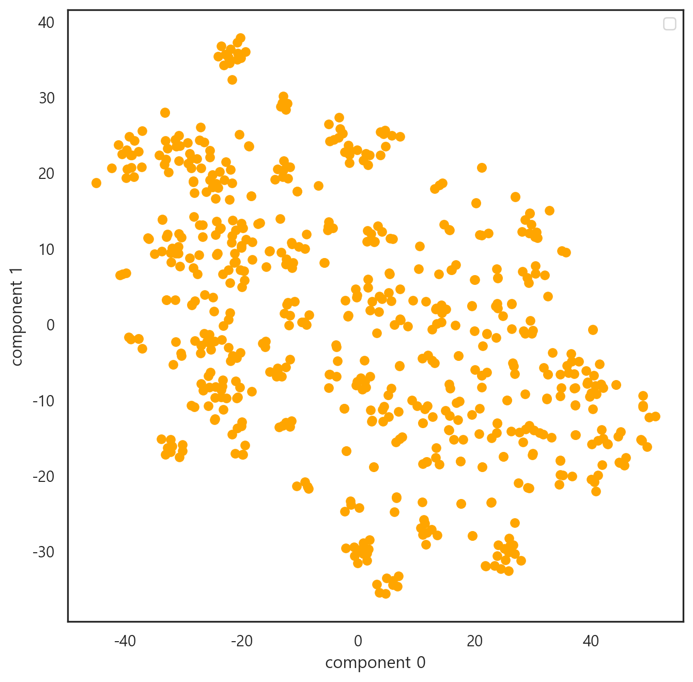
문서 간 밀접 여부 파악이 어려움 Clustering의 정확도가 낮을 것으로 예상
from sklearn.cluster import KMeans
from yellowbrick.cluster import KElbowVisualizer
vzr = KElbowVisualizer(KMeans(max_iter=1000, random_state=10), k=(2, 20))
vzr.fit(norvec)
vzr.poof()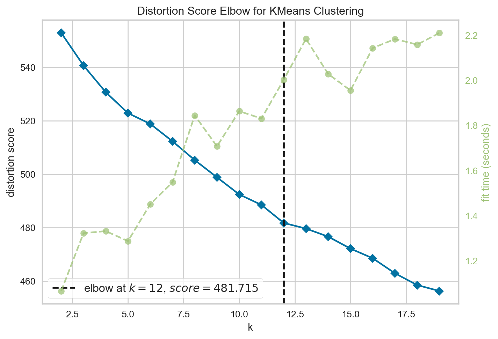
<AxesSubplot: title={'center': 'Distortion Score Elbow for KMeans Clustering'}, xlabel='k', ylabel='distortion score'>from yellowbrick.cluster import SilhouetteVisualizer
kmeans= KMeans(n_clusters=12, max_iter=1000, random_state=10) #최적 Topic 개수 12개를 기점으로 진행
visualizer = SilhouetteVisualizer(kmeans, colors='yellowbrick')
visualizer.fit(norvec)
visualizer.show()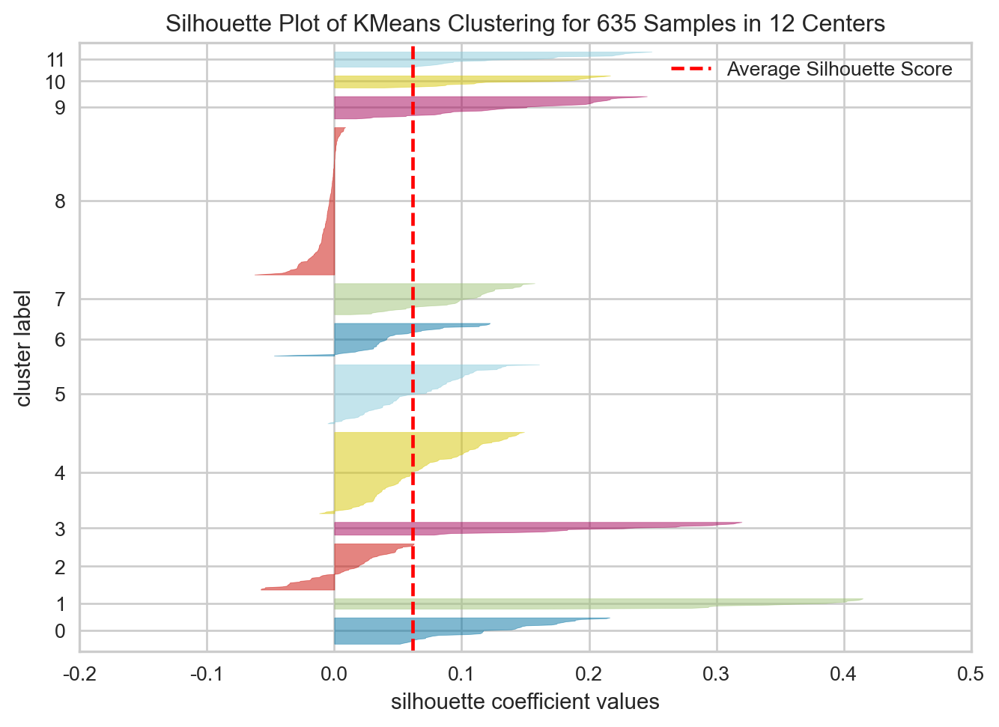
<AxesSubplot: title={'center': 'Silhouette Plot of KMeans Clustering for 635 Samples in 12 Centers'}, xlabel='silhouette coefficient values', ylabel='cluster label'>topic_df = news_df[['언론사', '제목', '키워드']]kmeans.fit(norvec)
labels = kmeans.labels_
topic_df['군집'] = labelstopic_df.groupby('군집').size()군집
0 34
1 14
2 59
3 17
4 103
5 75
6 42
7 40
8 186
9 29
10 16
11 20
dtype: int64topic_df.loc[topic_df['군집']==0, '군집'] = '경제'
topic_df.loc[topic_df['군집']==1, '군집'] = '리멤버 0715'
topic_df.loc[topic_df['군집']==2, '군집'] = '인하대 사건 그 이후'
topic_df.loc[topic_df['군집']==3, '군집'] = '인하대 입시'
topic_df.loc[topic_df['군집']==4, '군집'] = '인하대 사건 조사보도'
topic_df.loc[topic_df['군집']==5, '군집'] = '가해자 재판'
topic_df.loc[topic_df['군집']==6, '군집'] = '젠더 이슈'
topic_df.loc[topic_df['군집']==7, '군집'] = '가해자 체포'
topic_df.loc[topic_df['군집']==8, '군집'] = '관련 없는 기사'
topic_df.loc[topic_df['군집']==9, '군집'] = '학교 측 가해자 징계'
topic_df.loc[topic_df['군집']==10, '군집'] = '인하대 총장'
topic_df.loc[topic_df['군집']==11, '군집'] = '부고'분석 결과, K-Means가 가장 Performance가 가장 좋았음
filter_list = ['경제', '인하대 입시', '관련 없는 기사', '인하대 총장', '부고']
inha_df = topic_df[~topic_df['군집'].isin(filter_list)]
inha_df.reset_index(drop = True, inplace = True)나머지 내용은 R을 이용하여 분석 진행
분석 결과를 Quarto 기반 보고서로 제작 예정